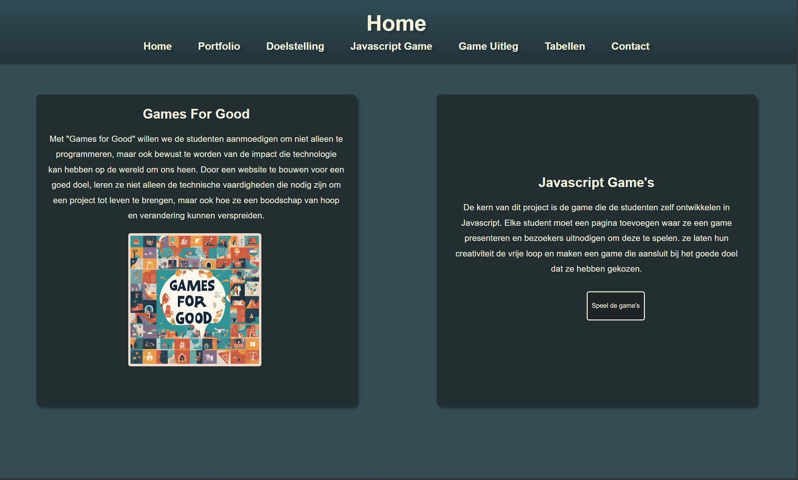
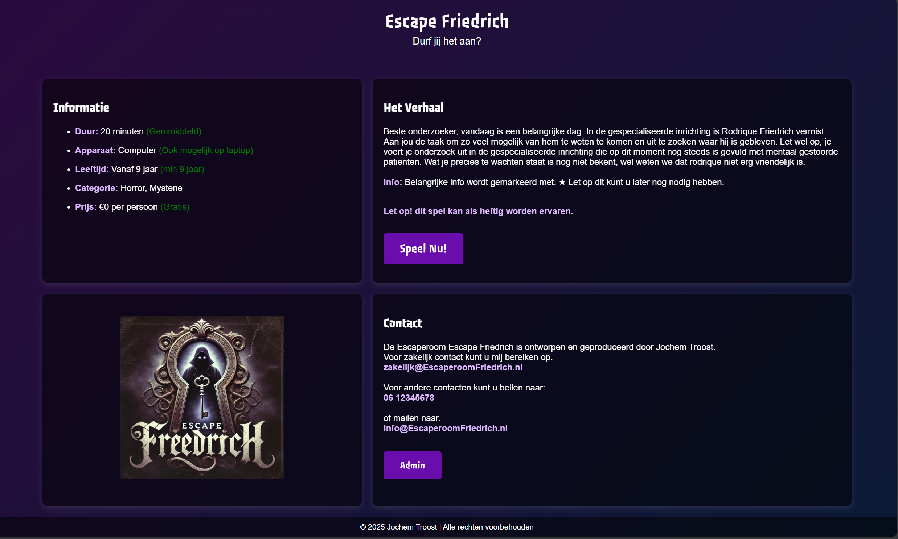
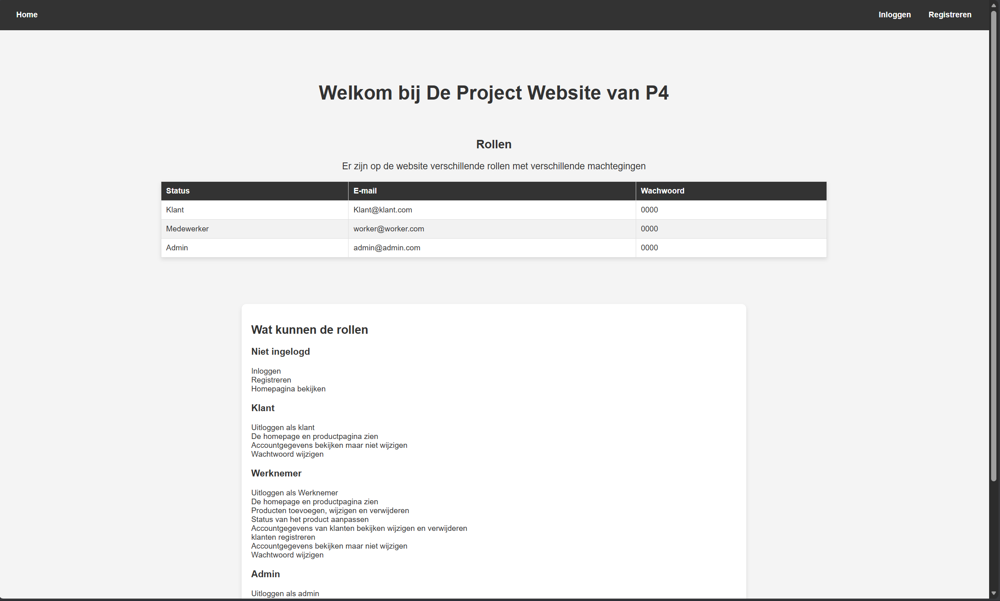
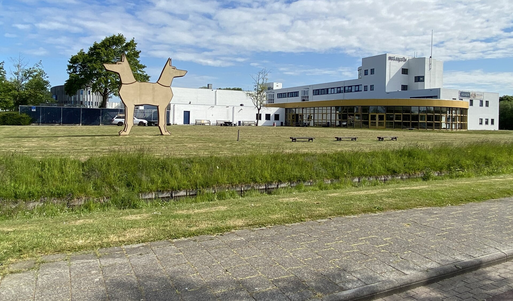
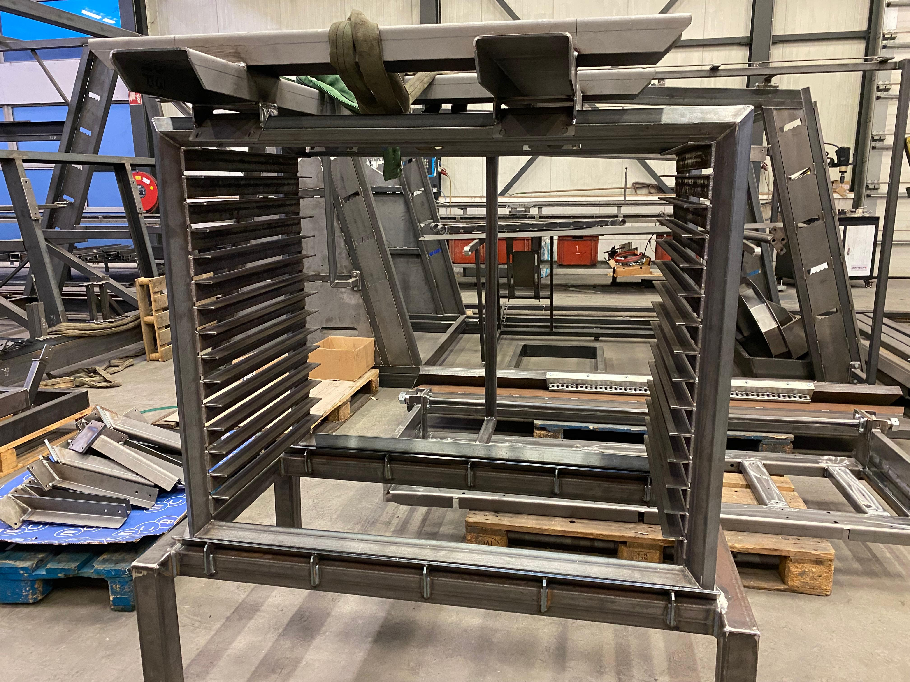
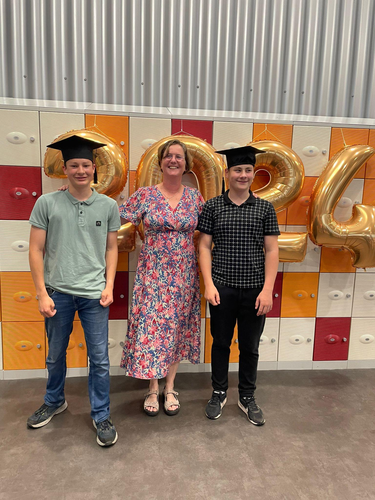

Projecten

Bekijk
Project 2 Landen Opdracht
Voor dit project moest ik ons verdiepen in het voedselprobleem van surinamen.
Bekijk

Bekijk
Project 3 Escaperoom
Voor dit project moest ik een escaperoom maken. Ik heb het thema Medische inrichting aangehouden.
Bekijk

Bekijk
Project 4 Statussen
Bij dit project moest ik verschillende soorten gebruikers verschillende machtegingen geven.
Bekijk
Tijdlijn
2020 - 2024 Helinium VMBO-K Techniek

2023 Stage bij PE-Tech

Juni 2024 Geslaagd op Helinium VMBO-K Techniek

2024 - Heden Techniek College Rotterdam als
Software developer

Feb 2026 Stage voor Techniek College Rotterdam als
Software developer
Links & Contact
Voel je vrij om me te benaderen via de onderstaande gegevens. Ik kijk ernaar uit om van je te horen!